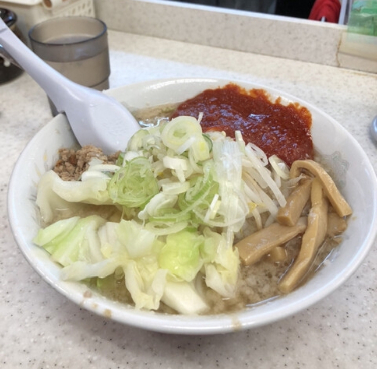
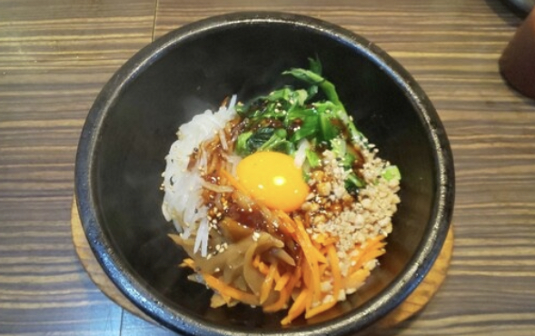

ご飯ページ
このお店はこってりラーメンが売りでした。
そして机の上には辛み味噌やおろしニンニクなどが置いており、味変が可能でした。
店内はオープンキッチンで作る工程を見ることができるので目でも楽しめました。
ちなみに私は特製旨辛ラーメン醤油をいただきました。
辛味噌をしっかり溶かし食べてみるとちょうど良い辛さで薄めな醤油で背脂の旨みがすごかったです。
そして何よりこのこってり感にはおろしニンニクがとても合い、美味しいラーメンでした。
営業時間：AM11時～PM3時 定休日：水曜日

私はこのお店に行って石焼きビビンバを食べました。
石焼きビビンバはテーブルに置いてあるコチュジャンでセルフで味付けします。
石焼きは良い感じで焦げ目が付き、しばらく熱が逃げないので、食べ終わる頃まで温かいままで
食べる事が出来ました。
ちゃんと美味しくて、サービスもちゃんとしていて良いお店だと思いました。
自分が行ったときに待ち時間が発生していたのも頷けます。
営業時間：AM11時～PM23時 定休日：なし
